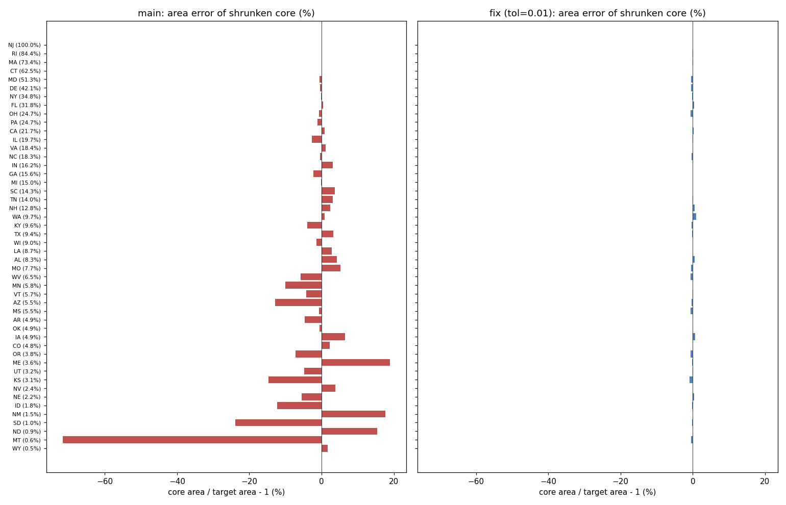
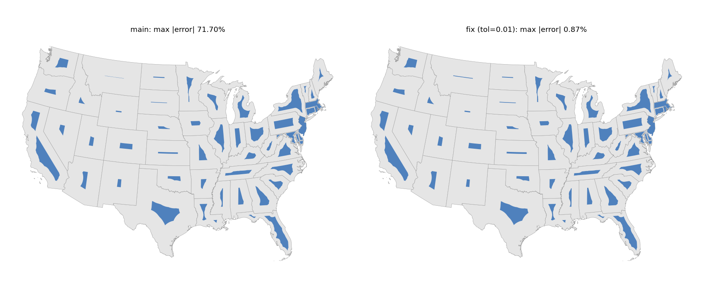
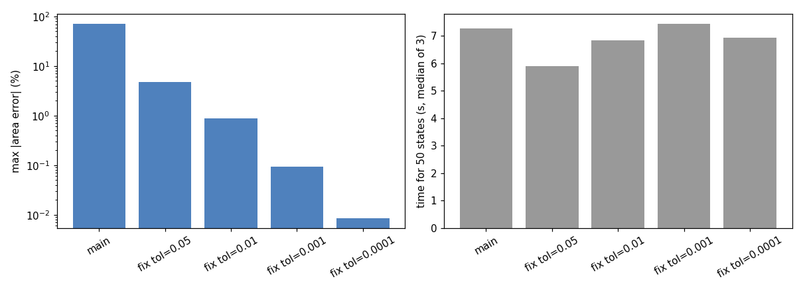

shrink() now bounds the relative area error of the shrunken core by tol (default 0.01); before, tol applied to the buffer distance and small targets missed by up to 72%.
proportional_cartogram.shrink used tol as the root-finder tolerance on the buffer distance. For small target fractions the area is very sensitive to that distance, so the core could miss its area target without a warning. The solve now runs on the relative area residual and stops as soon as abs(area / target - 1) < tol, so tol sets both the achieved area error and the speed. The default is 0.01.
Each state is shrunk to its density ratio relative to the densest state (the non-contiguous cartogram construction in issue #74). DC is excluded from the measurements. make_figures.py regenerates every figure from a carto-flow checkout.
area_error_per_state.png: area error of every shrunken core, main (left)and fix at the default tol (right), states sorted by target fraction. Same x range on both.
map.png: the shrunken cores over the original states, main and fix.tol_sweep.png: maximum area error and runtime for main and for several tol.| State (target) | main | fix (tol=0.01) |
|---|---|---|
| SD (1.0%) | -23.9% | -0.222% |
| MT (0.63%) | -71.7% | -0.447% |
| ID (1.8%) | -12.3% | -0.240% |
| NM (1.5%) | +17.7% | -0.049% |
| OH (24.7%) | -0.7% | -0.689% |
| PA (24.7%) | -1.1% | +0.007% |
At the default tol the largest absolute error over the 50 states is 0.874% (mean 0.252%), against 71.7% (mean 6.043%) on main. Main exceeds 1% error for 33 states and 0.1% for 44; the fix exceeds 1% for none and 0.1% for 29. OH is unchanged because main already lies within the default tolerance there.
Area error over the 50 states and runtime for all of them (median of 3 runs). Runtimes were measured while other jobs shared the machine and differ by about 10% between runs, so differences between neighboring rows are within noise.
| version | max error | mean error | time (s) |
|---|---|---|---|
| main | 71.700% | 6.043% | 7.3 |
| fix tol=0.05 | 4.792% | 1.496% | 5.9 |
| fix tol=0.01 (default) | 0.874% | 0.252% | 6.8 |
| fix tol=1e-3 | 0.094% | 0.016% | 7.4 |
| fix tol=1e-4 | 0.008% | 0.001% | 6.9 |
A looser tol is faster; at the default the runtime is about that of main.

area_error_per_state.png

map.png

tol_sweep.png